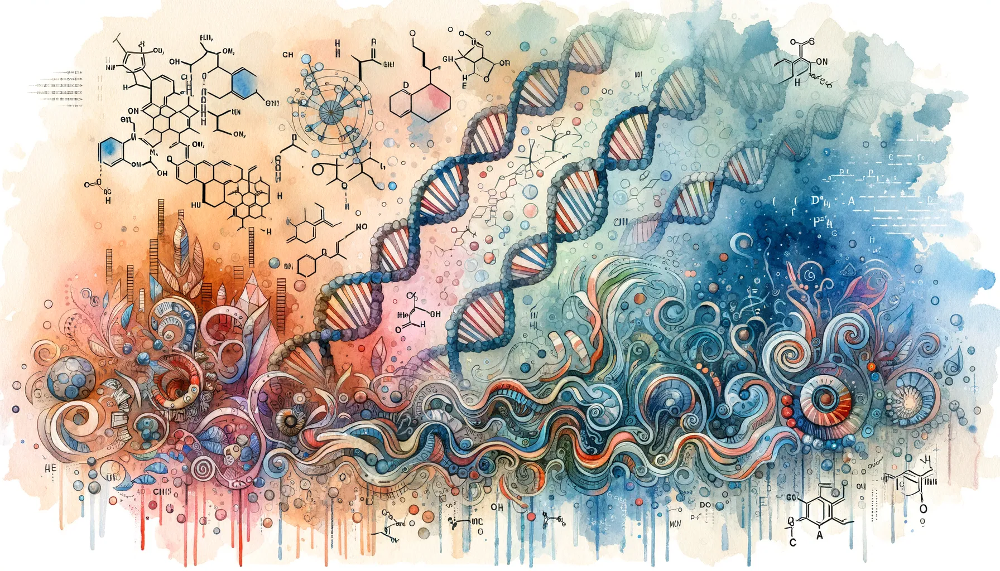

Eric J Ma's Website
written by Eric J. Ma on 2024-06-18 | tags: data science reproducibility portability open source data management software skills data access version control data patterns technology guardrails
In this blog post,
I explore the importance of reproducibility and portability in data science,
focusing on data access patterns.
I introduce pins,
an open-source tool that enables data scientists to reference data
from a central source of truth and manage data versions explicitly.
By using pins, we can avoid common pitfalls like non-reproducible analyses
and streamline the process of accessing and versioning data.
This approach not only enhances productivity
but also ensures that data is accessed in a consistent and error-free manner.
Curious about how pins and analogous tools can robustify your data science workflow?
written by Eric J. Ma on 2024-06-08 | tags: protein structure autoregressive models neural networks von mises distribution protein backbone generation mixture models dihedral angles machine learning scientific research probability distribution

In this blog post, I do a deep dive into the paper 'The Continuous Language of Protein Structure' by Billera et al., which explores generating protein backbones using autoregressive models and the von Mises mixture model for sampling dihedral angles. This approach challenges the traditional discrete output of autoregressive models by producing continuous values, specifically for modeling protein structures. I discuss the technical and scientific premises, the role of the von Mises distribution, and the potential issue of non-identifiability in mixture models. How does this method open new avenues in protein structural modeling? Read on to find out.
Read on... (1452 words, approximately 8 minutes reading time)written by Eric J. Ma on 2024-06-01 | tags: cuda jax conda environment variables cudnn python gpu dynamic libraries nvidia software installation
In this blog post, I share how to resolve CUDA backend initialization issues when installing JAX with CUDA, specifically addressing outdated cuDNN versions. I detail a method using Conda environments to manage CUDA installations and set environment variables correctly, offering two solutions: configuring LD_LIBRARY_PATH through Conda's activate.d and deactivate.d scripts, or directly within a Python session using a .env file. Both approaches aim to ensure that JAX utilizes the correct CUDA libraries, but each has its tradeoffs regarding portability. Curious about which method might work best for your setup?
Read on... (1344 words, approximately 7 minutes reading time)written by Eric J. Ma on 2024-05-27 | tags: deep learning multi-modal learning data fusion protein sequences biomedical texts gradient descent semantic alignment masked language modelling model architecture embedding conversion
In this blog post, I explore multi-modality deep learning based on two papers from the biomedical world, in which we explore the definition of data modalities, what fusion is and how it takes place within a model, and possible training objectives. In this post, I also considers how to utilize these models with only one input modality available, highlighting the potential for protein function prediction and sequence generation. How can multi-modal deep learning transform our approach to complex data analysis?
Read on... (2028 words, approximately 11 minutes reading time)written by Eric J. Ma on 2024-05-16 | tags: pymol jupyter notebooks python scripting protein visualization pdb files data science gpt-4 matplotlib plotting bioinformatics automation
In this blog post, I share my journey of learning to script PyMOL directly from Jupyter notebooks, a skill I picked up with the help of GPT-4. I detail the process of installing PyMOL, setting up the environment, and scripting to process and visualize protein structures, specifically nanobody VHH structures. I also demonstrate how to plot these structures in a grid using matplotlib. But the more important lesson here is how quickly I was able to pick it up, thanks to GPT-4! Are you able to leverage LLMs as a skill-learning hack?
written by Eric J. Ma on 2024-05-12 | tags: crispr-cas protein language models genomic data machine learning bioinformatics sequence generation protein engineering gene editing dataset curation computational biology data science generative model generative artificial intelligence
In this blog post, I do a deep dive into a fascinating paper on designing CRISPR-Cas sequences using machine learning. The authors develop a generative model to produce novel protein sequences, validated in the lab, aiming to circumvent intellectual property restrictions. They curate a vast dataset, the CRISPR-Cas Atlas, and employ various models and filters to ensure sequence viability. My review highlights the methodology, emphasizing the importance of filtering and the challenges of using 'magic numbers' without justification. How many sequences are enough to train a generative model, and what makes laboratory experiments faster? Curious to find out more?
Read on... (3017 words, approximately 16 minutes reading time)written by Eric J. Ma on 2024-05-05 | tags: data science biotech team management tutorial odsc east mission statement problem solving value delivery hiring challenges leadership
In this blog post, I share discussion insights from a hands-off tutorial I led at ODSC East on setting up a successful data science team within a biotech research organization. We explored formulating a mission, identifying problem classes, articulating value, and addressing challenges. I used my experience at Moderna to illustrate points, emphasizing the unique aspects of biotech data science. Despite not covering all topics due to time constraints, the discussion was enlightening, highlighting the contrast between biotech and other industries. How can these insights apply to your organization's data science team?
Read on... (2880 words, approximately 15 minutes reading time)written by Eric J. Ma on 2024-04-17 | tags: bioit world conference data science llms software development productivity tools ai training code completion debugging documentation commit messages
In this blog post, I share insights from my talk at the BioIT World conference in 2024, focusing on how LLMs empower data scientists and the necessity of software development skills in data science. I discuss practical applications of LLMs, such as code completion, documentation, debugging, and learning new domains, highlighting their role in enhancing productivity and efficiency. LLMs not only automate mundane tasks but also facilitate rapid knowledge acquisition, proving to be invaluable tools for data science teams. How could LLMs transform your data science work?
Read on... (2071 words, approximately 11 minutes reading time)written by Eric J. Ma on 2024-04-09 | tags: pre-commit webp optimization python
In this blog post, I share my journey of creating my first distributable pre-commit hook, convert-to-webp, using the pre-commit framework. This hook automatically converts images to the .webp format before they're committed to a repository, ensuring optimized image storage. I detail the essential configuration files, the creation of a Typer CLI for the hook, and how to make the hook available for others by tagging versions and adding it to a project's .pre-commit-config.yaml file. Curious about how to streamline your codebase with automated checks? How might this improve your project's efficiency?
written by Eric J. Ma on 2024-04-07 | tags: pyds-cli data science standards cookiecutter templates github actions
In this blog post, I share the latest updates to pyds-cli, including the use of cookiecutter templates for easy repo scaffolding and a new talks initializer for creating talk presentations using reveal-md. These updates simplify the CLI and offer a streamlined approach to project and talk setup, reflecting my commitment to promoting best practices among data scientists. With these tools, I aim to make it easier for data scientists to adopt standardized project structures. Curious about how these updates can enhance your workflow?